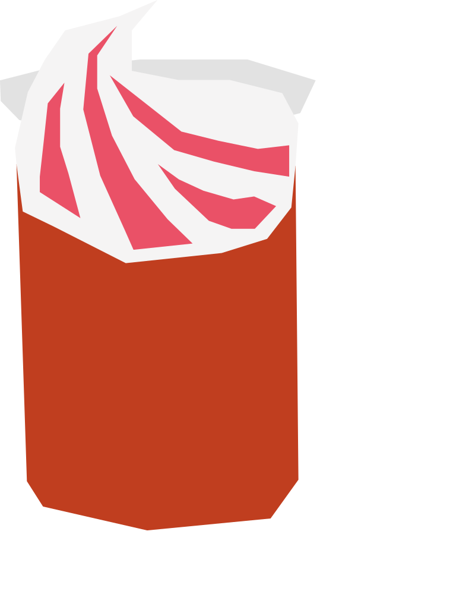

¿Qué terremoto?
Nació en los años 70 en el bar La Piojera de Santiago, uno de los más tradicionales del país. Su nombre alude al gran terremoto de 1985 por el efecto que produce al beberlo, y se volvió un símbolo de las Fiestas Patrias chilenas.
RECETA
- 200 ml vino pipeño
- 100 ml helado de piña
- 10 ml granadina
- Coloca el helado de piña en un vaso grande.
- Agrega el vino pipeño y termina con la granadina.
- Mezcla ligeramente antes de beber.
Vaso: Vaso grande / jarro